面向自主步态切换与高能效四足运动的自适应能量正则化
Adaptive Energy Regularization for Autonomous Gait Transition and Energy-Efficient Quadruped Locomotion
第 1 页Page 1PDF p.1
Adaptive Energy Regularization for Autonomous Gait Transition and Energy-Efficient Quadruped Locomotion
面向自主步态转换与高能效四足运动的自适应能量正则化
Boyuan Liang* , Lingfeng Sun* , Xinghao Zhu* , Bike Zhang, Ziyin Xiong, Yixiao Wang, Chenran Li, Koushil Sreenath, Masayoshi Tomizuka
Boyuan Liang* , Lingfeng Sun* , Xinghao Zhu* , Bike Zhang, Ziyin Xiong, Yixiao Wang, Chenran Li, Koushil Sreenath, Masayoshi Tomizuka
Abstract — In reinforcement learning for legged robot locomotion, crafting effective reward strategies is crucial. Predefined gait patterns and complex reward systems are widely used to stabilize policy training. Drawing from the natural locomotion behaviors of humans and animals, which adapt their gaits to minimize energy consumption, we investigate the impact of incorporating an energy-efficient reward term that prioritizes distance-averaged energy consumption into the reinforcement learning framework. Our findings demonstrate that this simple addition enables quadruped robots to autonomously select appropriate gaits—such as four-beat walking at lower speeds and trotting at higher speeds—without the need for explicit gait regularizations. Furthermore, we provide a guideline for tuning the weight of this energy-efficient reward, facilitating its application in real-world scenarios. The effectiveness of our approach is validated through simulations and on a real Unitree Go1 robot. This research highlights the potential of energy-centric reward functions to simplify and enhance the learning of adaptive and efficient locomotion in quadruped robots. Videos and more details are at https://sites. google.com/berkeley.edu/efficient-locomotion
摘要 — 在足式机器人运动的强化学习中，设计有效的奖励策略至关重要。预定义的步态模式和复杂的奖励系统被广泛用于稳定策略训练。借鉴人类和动物通过调整步态以最小化能量消耗的自然运动行为，我们研究了在强化学习框架中引入优先考虑距离平均能量消耗的高能效奖励项的影响。我们的研究结果表明，这一简单的补充使得四足机器人无需显式的步态正则化，便能自主选择合适的步态——例如在较低速度下的四拍行走（four-beat walking）和在较高速度下的小跑（trotting）。此外，我们提供了调整该高能效奖励权重的准则，促进其在真实世界场景中的应用。我们方法的有效性通过仿真以及在真实的 Unitree Go1 机器人上得到了验证。本研究凸显了以能量为中心的奖励函数在简化并增强四足机器人自适应高能效运动学习方面的潜力。视频和更多详情见 https://sites. google.com/berkeley.edu/efficient-locomotion
I. INTRODUCTION
I. 引言
Humans and animals exhibit various locomotion behaviors at different speeds, optimizing for their energy efficiency. For instance, humans typically walk at low speeds and run at higher speeds, rarely opting for jumping [1]. Prior research demonstrated through optimal control on planar models the correlation between speed and optimal gait choices concerning the cost of transport (CoT). For quadrupeds, the optimal gaits were four-beat walking1 at low speeds, trotting at intermediate speeds, and trotting/galloping at high speeds [2].
人类和动物在不同速度下表现出多样的运动行为，以优化其能量利用效率。例如，人类通常在低速时行走，在高速时奔跑，极少选择跳跃 [1]。先前的研究通过在平面模型上的最优控制证明了速度与关于运输成本（Cost of Transport, CoT）的最优步态选择之间的相关性。对于四足动物，最优步态在低速时为四拍行走1，在中速时为小跑（trotting），在高速时为小跑/奔驰（trotting/galloping）[2]。
Due to the rich information in the gaits, using a gait as guidance for locomotion policies is popular among lots of reinforcement learning (RL) based methods [3], [4]. However, crafting a versatile and robust locomotion policy that can adapt to and transition between multiple speeds while generalizing across different platforms poses substantial challenges. One of the main challenges here is the reward design. Gait reference can be used as extended state and extra regularization terms in reward functions to provide more supervision or input for low-level MPC [5] controllers. Previous works [4], [6], [7] trained on different quadruped robots within simulation environments like IsaacGym [8], [9] and successfully transferred these policies to physical
由于步态包含丰富的信息，利用步态作为运动策略的指导在许多基于强化学习（RL）的方法中广受欢迎 [3], [4]。然而，构建一个能够适应多种速度并在其间平滑转换、同时能泛化到不同平台的通用且鲁棒的运动策略面临着巨大挑战。其中的主要挑战之一是奖励函数的设计。步态参考可以作为扩展状态以及奖励函数中的额外正则化项，为底层 MPC [5] 控制器提供更多的监督或输入。先前的研究 [4], [6], [7] 在如 IsaacGym [8], [9] 等仿真环境中针对不同四足机器人进行训练，并成功将这些策略迁移至实体
* Equal contributions.
* 同等贡献。
All authors are with the Department of Mechanical Engineering, University of California, Berkeley, California, USA, 94720.
所有作者均隶属于美国加利福尼亚州伯克利市加利福尼亚大学伯克利分校机械工程系，邮编 94720。
Corresponding author: Lingfeng Sun (email: lingfengsun@berkeley.edu)
通信作者：Lingfeng Sun（邮箱：lingfengsun@berkeley.edu）
1Four-beat walking, two-beat walking, trotting and galloping are typical gaits for quadruped robots defined in [2] based on feet contact schedule.
1四拍行走（four-beat walking）、两拍行走（two-beat walking）、小跑（trotting）和奔驰（galloping）是 [2] 中根据足端触地时序定义的四足机器人典型步态。
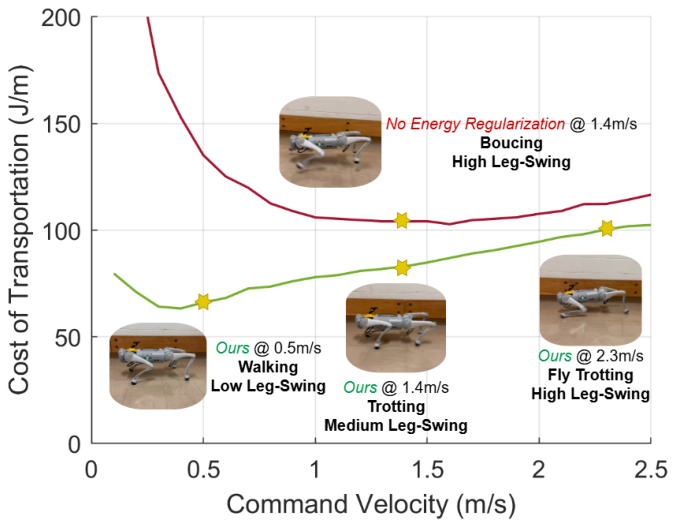
Fig. 1: Compared to the baseline when there is no energy regularization, our single policy (from one-time RL training) autonomously adopted different energy-efficient gaits (walking, trotting and fly trotting). It achieved lower energy consumption (adjusted leg-swing) at varying speeds.
图 1：与没有能量正则化的基准相比，我们的单一策略（来自单次强化学习训练）自主采用了不同的高能效步态（行走、小跑和腾空小跑）。它在不同速度下实现了更低的能耗（调整了摆腿动作）。
hardware. However, they often necessitate intricate reward designs and weight tuning. Apart from gait information, reward terms like feet-air time and contact force penalizing [6] were also used to encourage specific behaviors and help stabilize the training. While these additional reward components are aimed at inducing or preventing specific behavioral traits, they inadvertently align with the broader objective of reducing energy costs [10], [11]. This convergence prompts a reconsideration of our reward strategy: Could a more straightforward, energy-centric reward term replace the specifically designed terms used in prior policy training and work for general locomotion tasks, including various linear and angular velocity tracking and terrains? Such a term would encapsulate the core objective of reducing energy consumption and fostering stable and efficient locomotion. Gaits at different speeds and terrains are generated posteriorly when the robot finds an energy-efficient way to solve the locomotion task.
硬件。然而，它们往往需要复杂的奖励设计和权重调优。除步态信息外，诸如足部腾空时间（feet-air time）和接触力惩罚 [6] 等奖励项也被用于促成特定行为并帮助稳定训练。尽管这些额外的奖励分量旨在诱导或防止特定的行为特征，但它们在无形中与降低能耗这一更广泛的目标保持了一致 [10], [11]。这种一致性促使我们重新审视奖励策略：能否用一个更直接、以能量为中心的奖励项来替代以往策略训练中专门设计的奖励项，并适用于通用的运动任务（包括各种线速度与角速度跟踪以及不同地形）？这样的奖励项将涵盖降低能耗以及促进稳定高效运动的核心目标。当机器人找到一种高能效的方式来解决运动任务时，在不同速度和地形下的步态便会自然后验生成。
Building on the concept that energy-efficient gaits correlate with speed [2] and aligning with prior work emphasizing that energy minimization at pre-selected speed results in the emergence of specific gaits [11], this study investigates a more streamlined reward formulation for energy-efficient locomotion. By focusing on energy minimization without intricately designed reward components, we aim to verify if such a simplified approach can yield stable and effective
基于高能效步态与速度相关的概念 [2]，并结合先前强调在预选速度下能量最小化会导致特定步态涌现的研究 [11]，本研究探讨了一种用于高能效运动的更精简奖励表述。通过专注于能量最小化而不采用复杂设计的奖励分量，我们旨在验证这种简化方法是否能够在不同速度下为四足机器人带来稳定且有效的
展开第 1 页原版整页（含全部图表、公式与页眉页脚）
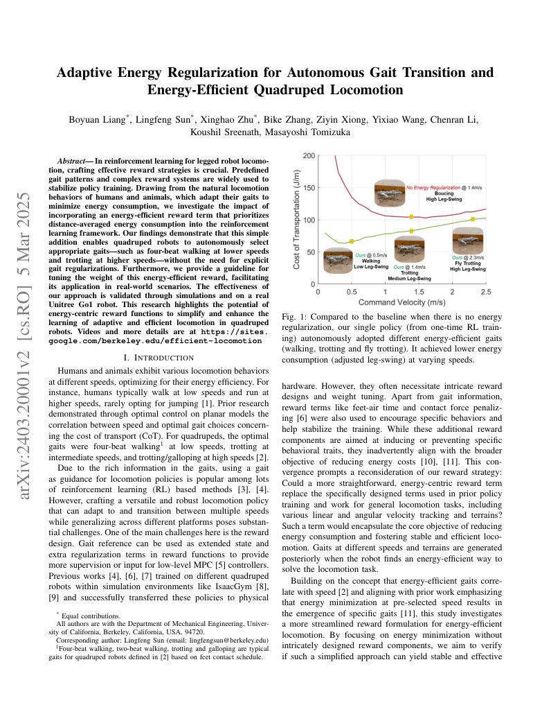
第 2 页Page 2PDF p.2

Fig. 2: Gait switching under different command velocities. The policy is generated when \(α_{en}=1.0\). As the command velocity increases, the policy shows automatic gait transition. We also demonstrate snapshots of two beat walking at 0.5 m/s, trotting at 1.4 m/s and fly trotting at 2.3 m/s.
图 2：不同指令速度下的步态切换。该策略在 \(α_{en}=1.0\) 时生成。随着指令速度的增加，策略展现出自发的步态转换。我们还展示了在 0.5 m/s 时的两拍行走、1.4 m/s 时的快步（小跑）以及 2.3 m/s 时的腾空小跑的快照截图。
velocity-tracking in quadruped robots across various speeds. Instead of generating multiple velocity-specific energy optimal policies [11], we focus on getting a single energyoptimal policy across all target linear and angular velocities, and different terrains via RL training.
速度跟踪能力。与生成多个针对特定速度的能量最优策略 [11] 不同，我们专注于通过强化学习训练获得一个在所有目标线速度、角速度以及不同地形下均适用的单一能量最优策略。
In our research, we investigate the impact of incorporating a distance-averaged energy reward term into the reinforcement learning framework. This reward term directly penalizes energy consumption per unit motion traveled, promoting energy-efficient locomotion across various speeds. We explore the effect of different weightings for this energy reward, observing that both excessively low and high weights can lead to undesirable behaviors such as unnatural movements or immobility. By carefully tuning the weight of the distanceaveraged energy reward, we demonstrate its effectiveness in facilitating stable velocity tracking and encouraging the emergence of energy-efficient gaits.
在我们的研究中，我们探究了将距离平均能量奖励项引入强化学习框架的影响。该奖励项直接对每单位运动距离所消耗的能量进行惩罚，从而促进不同速度下的高能效运动。我们探讨了该能量奖励不同权重的影响，观察到过低和过高的权重都会导致不良行为，例如不自然的动作或静止不动。通过仔细调优距离平均能量奖励的权重，我们证明了其在促进稳定速度跟踪和促使高能效步态涌现方面的有效性。
Employing this adaptive reward structure within IsaacGym enables the training of robust policies for the Unitree Go1 [12] quadruped robot. As illustrated in section IV, our methodology identifies appropriate gaits, such as four-beat walking at lower speeds and trotting at higher speeds, without predefined gait knowledge. The energy-efficient policy also shows better performance in circle tracking and terrain clearance tasks. The trained single policy is deployed on a real Go1 robot to verify its stable moving and transition locomotion skills in the real world.
在 IsaacGym 中采用这种自适应奖励结构，能够为 Unitree Go1 [12] 四足机器人训练出鲁棒的策略。如第 IV 节所示，我们的方法在无需预定义步态先验知识的情况下识别出了合适的步态，例如在较低速度下的四拍行走和较高速度下的小跑。该高能效策略在圆周跟踪和越障任务中也表现出更佳的性能。训练得到的单一策略部署在真实 Go1 机器人上，以验证其在真实世界中稳定的移动和转换运动技能。
The main contribution of this paper includes:
本文的主要贡献包括：
- Introduction of a streamlined reward formula integrating basic velocity-tracking and distance-averaged energy
- 提出了一种精简的奖励公式，该公式结合了基础速度跟踪和距离平均能量
minimization to foster stable, velocity-sensitive locomotion policies.
最小化，以培养稳定且对速度敏感的运动策略。
- Demonstration that the derived policies autonomously adopt different energy-efficient gaits at varying speeds without preset gait knowledge.
- 证明了导出的策略在无需预设步态先验知识的情况下，能够在不同速度下自主采用不同高能效步态。
- Evaluation of the velocity-tracking and energy efficiency across reward structures and weight tunings for Unitree Go1, culminating in the real-world application of these policies on a Go1 robot, affirming their efficacy in stable locomotion and gait transition.
- 评估了 Unitree Go1 在不同奖励结构和权重调整下的速度跟踪与能量效率，并最终将这些策略实际应用于 Go1 机器人上，证实了其在稳定运动与步态转换方面的有效性。
II. RELATED WORKS
II. 相关工作
A. Reinforcement Learning for Locomotion Skills
A. 面向运动技能的强化学习
After deep RL demonstrated its capability to fit general policies in an unsupervised manner, researchers actively sought its potential to be deployed on legged locomotion. Hwangbo et al. [13] achieved RL-generated walking policies on a plane ground using a pre-trained actuator net to reduce the sim-to-real gap. Further research also achieved training the policy with adaptive actuator net [14] or motor control parameters [15], [16]. In Hwangbo’s follow-up works, locomotion on complicated terrains using a similar approach was also accomplished [17], [18], [19]. With modern GPUaccelerated simulators [8], [9], more time-efficient training frameworks were proposed [6], [20]. Due to the intensive reward engineering in these approaches, the model-free RL tends to converge to a single gait, usually trotting gait, which may not be the most efficient for all terrains and target velocities [21].
在深度强化学习展现出以无监督方式拟合通用策略的能力后，研究人员积极探索其部署于足式运动的潜力。Hwangbo 等人 [13] 利用预训练的执行器网络（actuator net）缩小仿真到现实的差距，在平地上实现了强化学习生成的行走策略。后续研究还实现了利用自适应执行器网络 [14] 或电机控制参数 [15], [16] 训练策略。在 Hwangbo 的后续工作中，采用类似方法还实现了复杂地形上的运动 [17], [18], [19]。借助现代 GPU 加速仿真器 [8], [9]，研究人员提出了时间效率更高的训练框架 [6], [20]。由于这些方法中繁重的奖励工程，无模型强化学习往往会收敛到单一的步态（通常是小跑步态），而这对于所有地形和目标速度而言未必是最有效的 [21]。
展开第 2 页原版整页（含全部图表、公式与页眉页脚）
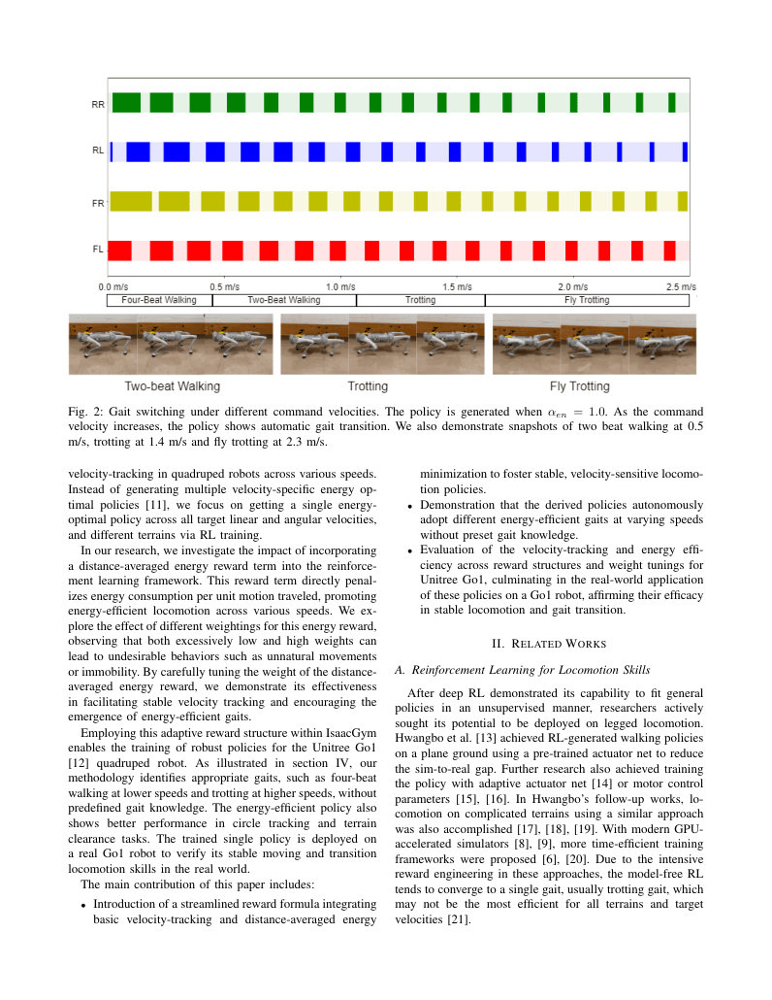
第 3 页Page 3PDF p.3
Many efforts were made to overcome this limitation by promoting the behavioral diversity of legged robots. Researchers in [22] proposed a hierarchical framework that prespecifies a set of gait primitives and allows an RL model to choose from them. In [5], [23], gait primitives were parameterized using the contact schedule and an RL policy was trained to select these parameters. These works used model predictive control (MPC) as the lower-level controller, which demands preliminary knowledge of locomotion and contact modeling [24]. In [4], behavioral-related arguments such as body height, step frequency, and phase are directly added to the RL model input for end-to-end training. Although various two-beat gaits (where legs touch the ground in pairs) were realized, they cannot generate four-beat gaits (where legs touch the ground in orders) and require manual gait specification in different scenarios. It is more desirable if the quadruped robot can select the most suitable behavior by itself. In [11], a pipeline was proposed to output different gaits under different velocities via minimizing energy consumption. However, this pipeline relies on training and distillation of several velocity-specific RL policies.
为了克服这一局限性，研究人员付出了诸多努力以促进足式机器人的行为多样性。[22] 中的研究人员提出了一种分层框架，该框架预先指定了一组步态基元（gait primitives），并允许强化学习模型从中进行选择。在 [5], [23] 中，步态基元使用接触时序进行参数化，并训练强化学习策略来选择这些参数。这些工作使用模型预测控制（MPC）作为底层控制器，这需要运动和接触建模的先验知识 [24]。在 [4] 中，与行为相关的参数（如身体高度、步频和相位）被直接添加到强化学习模型的输入中以进行端到端训练。尽管实现了多种两拍步态（腿成对触地），但它们无法生成四拍步态（腿依次触地），并且在不同场景下需要手动指定步态。如果四足机器人能够自行选择最合适的行为，将更为理想。在 [11] 中，提出了一种通过最小化能量消耗在不同速度下输出不同步态的流程。然而，该流程依赖于针对多个特定速度的强化学习策略的训练与蒸馏。
B. Energy Studies on Locomotion
B. 运动能量研究
The energetic economy of legged robots has always been an important concern for researchers. The cost of transport, namely the amount of energy used per distance traveled, was introduced in [25], [26], where the minimization of CoT was connected to the choice of speeds [27] and step lengths [28] in human locomotion behaviors. The optimal velocity varies for different gaits, allowing animals to transit between different gaits to move at various speeds.
足式机器人的能量经济性一直是研究人员关注的重要问题。运输成本（Cost of Transport），即每行驶单位距离所消耗的能量，在 [25], [26] 中被引入，其中 CoT 的最小化与人类运动行为中速度 [27] 和步长 [28] 的选择相联系。不同步态的最佳速度各不相同，这使得动物能够在不同步态之间转换以适应不同的运动速度。
Conceptual legged models of bipedal [29], [30], and quadruped [31], [32], [2] robots are later designed by researchers to search for energetically optimal motions on various gaits. For quadruped robots, genetic algorithms were used in [31] to study potential gaits at different speeds. Our research is mainly inspired by [2], where optimal control problems are formulated on realistic robot models considering the effects of leg mass, plastic collisions, and damping losses. This work uses an unbiased search on energy-efficient locomotion patterns at various velocities and demonstrates the energy vs. velocity curve for different gaits. Inspired by the results, we believe there exists a policy that can transit between gaits at different velocities with an energy-optimization reward. Among previous works, [11] is close to ours in utilizing relations between energy and gaits. It generated multiple policies, with each policy velocityspecific and energy-optimal. In contrast, our work focuses on generating a single energy-optimal policy across various speeds, and it aims to replace the complex-designed reward terms in RL.
研究人员随后设计了双足 [29], [30] 和四足 [31], [32], [2] 机器人的概念性足式模型，以寻找各种步态下能量最优的运动。对于四足机器人，[31] 中使用了遗传算法来研究不同速度下的潜在步态。我们的研究主要受到 [2] 的启发，该工作在逼真的机器人模型上构建了最优控制问题，考虑了腿部质量、非弹性碰撞和阻尼损耗的影响。该工作在各种速度下对高能效运动模式进行了无偏搜索，并展示了不同步态的能量与速度关系曲线。受到这些结果的启发，我们认为存在这样一种策略，它可以通过能量优化奖励在不同速度下的各种步态之间转换。在先前的研究中，[11] 在利用能量与步态关系方面与我们的工作相近。该工作生成了多个策略，每个策略针对特定速度且能量最优。相比之下，我们的工作侧重于生成跨越各种速度的单一能量最优策略，旨在取代强化学习中精心设计的复杂奖励项。
III. ENERGY REGULARIZATION
III. 能量正则化
A general form of energy regularized locomotion reward takes the following form:
能量正则化运动奖励的一般形式如下：
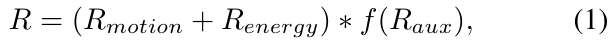
where \(R_{motion}\) encourages accurate velocity tracking, \(R_{energy}\) discourages energy consumption and \(R_{aux}\) includes other necessary rewards to stabilize training. \(*\) and \(f\) are respectively an arithmetic operator and functions. Common choices are \(*=+\), \(f(x)=-x\) [6] and \(*=\times\), \(f(x)=\exp(-x)\) [4].
其中 \(R_{motion}\) 鼓励精确的速度跟踪，\(R_{energy}\) 抑制能量消耗，而 \(R_{aux}\) 包含用于稳定训练的其他必要奖励。\(*\) 和 \(f\) 分别表示算术运算符和函数。常见的选择为 \(*=+\), \(f(x)=-x\) [6] 以及 \(*=\times\), \(f(x)=\exp(-x)\) [4]。
In previous work [11], motion rewards include negative squared linear and angular velocity tracking errors; energy rewards include negative time-averaged motor power with a fixed weight \(-\tau\dot{q}\); survival bonus is also added. In experiments, we found such a training process unstable across different speeds, primarily for two reasons— 1) The negatively unbounded nature of tracking and energy rewards. 2) The scale of energy reward varies across different speeds, and the energy reward weight usually only works within a narrow range of reference speeds. It is hard to find a single energy reward weight value that works for all reference velocities without knowing more simulation settings and training details. As a result, different speeds are trained in different runs separately in [11] to energy-efficient gaits at different speeds.
在先前的研究 [11] 中，运动奖励包含线速度和角速度跟踪误差的负平方；能量奖励包含带有固定权重 \(-\tau\dot{q}\) 的负时间平均电机功率；此外还添加了存活奖励（survival bonus）。在实验中，我们发现这种训练过程在不同速度下不稳定，主要有两点原因：1) 跟踪奖励和能量奖励在负方向上无界。2) 能量奖励的尺度在不同速度下存在差异，且能量奖励权重通常仅在参考速度的较窄范围内有效。在不了解更多仿真设置和训练细节的情况下，很难找到一个适用于所有参考速度的单一能量奖励权重值。因此，[11] 中在不同的运行中分别针对不同速度进行独立训练，以获得不同速度下的高能效步态。
To overcome this challenge in reward design, we proposed that the energy-related reward function should depend on the robot’s velocity to promote an automatic generation of energy-efficient behavior of legged robots under various reference velocities.
为了克服奖励设计中的这一挑战，我们提出与能量相关的奖励函数应当依赖于机器人的速度，以促进足式机器人在各种参考速度下自发生成高能效行为。
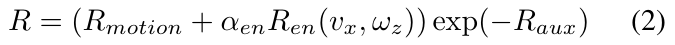
where \(v_x\) is the robot moving velocity. The remaining of this section elaborates on each component in (2).
其中 \(v_x\) 是机器人的移动速度。本节其余部分将详细阐述 (2) 中的各个分量。
1) Motion Rewards: \(R_{motion}\) consists of \(R_{lin}\) and \(R_{ang}\), which respectively encourage the legged robot to track the linear reference velocities in two directions \(\hat{v}_x, \hat{v}_y\) and angular reference velocities \(\hat{\omega}_z\).
1) 运动奖励：\(R_{motion}\) 由 \(R_{lin}\) 和 \(R_{ang}\) 组成，它们分别促使足式机器人跟踪两个方向的线参考速度 \(\hat{v}_x, \hat{v}_y\) 以及角参考速度 \(\hat{\omega}_z\)。
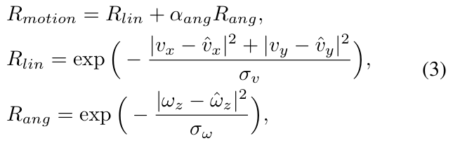
where \(\hat{v}_y\) and \(\hat{\omega}_z\) are not user-specified commands, but randomly sampled during training as explained in section IV-A. \(\sigma_v\) and \(\sigma_{\omega}\) are scaling factors depending on the training velocity range. The structure of motion rewards, the coefficient \(\alpha_{ang}=0.5\) for angular velocity tracking, and the scaling coefficients follow the default setting in leggedgym [6].
其中 \(\hat{v}_y\) 和 \(\hat{\omega}_z\) 并非用户指定的指令，而是在训练过程中随机采样的，如第 IV-A 节所述。\(\sigma_v\) 和 \(\sigma_{\omega}\) 是取决于训练速度范围的缩放因子。运动奖励的结构、角速度跟踪系数 \(\alpha_{ang}=0.5\) 以及缩放系数均遵循 leggedgym [6] 中的默认设置。
2) Energy Rewards: \(R_{en}\) rewards the system for consuming less energy while moving.
2) 能量奖励：\(R_{en}\) 奖励系统在运动过程中消耗更少的能量。
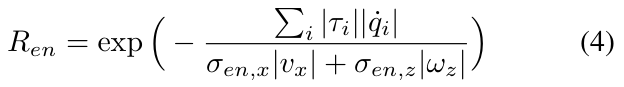
The energy consumption is averaged against the robot’s amount of motion. \(\tau_i\)'s are the actuated torque at each joint while \(\dot{q}_i\)'s denotes the joint velocities. \(\sigma_{en,x}\) and \(\sigma_{en,z}\) are energy scaling constants. Components inside the round bracket of (4) is equivalent to the linear-distance-averaged energy
能量消耗相对于机器人的运动量进行了平均。\(\tau_i\) 是各关节的驱动力矩，而 \(\dot{q}_i\) 表示关节速度。\(\sigma_{en,x}\) 和 \(\sigma_{en,z}\) 是能量缩放常数。(4) 中圆括号内的分量等价于线性距离平均能量
展开第 3 页原版整页（含全部图表、公式与页眉页脚）
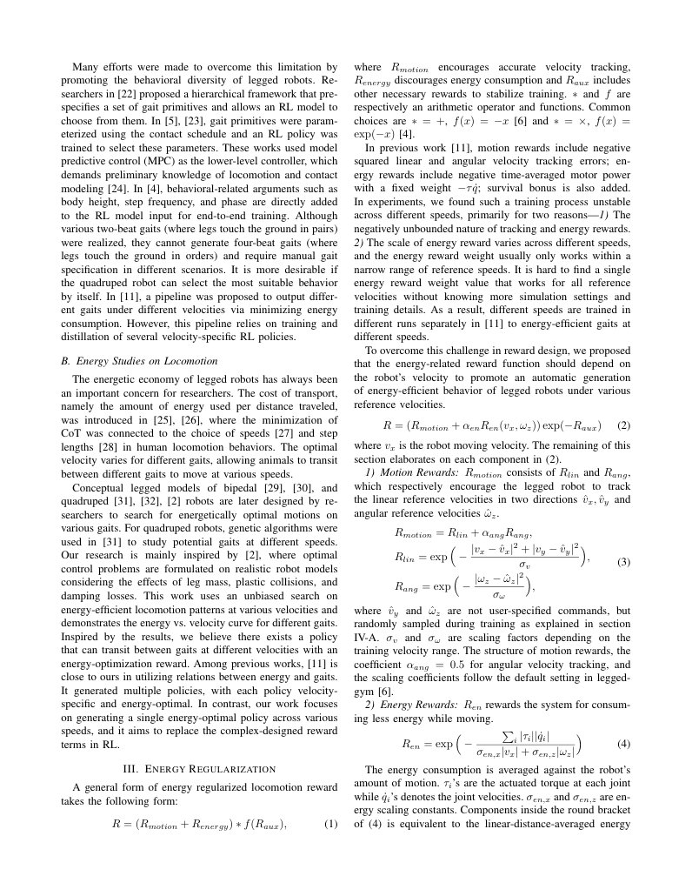
第 4 页Page 4PDF p.4
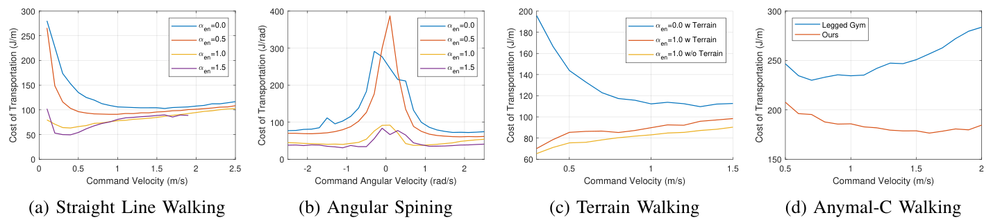
Fig. 3: Ablation study of energy consumption in Unitree Go1 simulation. For straight line walking, reference linear velocities are chosen from \(0.1\) to \(2.5\) m/s with \(0.1\) common gap. The cost of transportation is measured in \(J/m\). For angular spining, reference angular velocities are chosen from \(-2.5\) to \(2.5\) rad/s with \(0.2\) common gap. In both (a) and (b), CoT considerably decreases when \(\alpha_{en}\) reaches \(1.0\). CoT of \(\alpha_{en}=1.5\) when reference velocity of above \(1.9\) m/s is not plotted because the output velocity drops to zero in this range. This indicates that velocity tracking accuracy will be sacrificed when energy regularization weight \(\alpha_{en}\) is too large. For terrain walking, the robot is asked to walk in a straight line on a rough slope terrain with reference linear velocities from \(0.3\) to \(1.5\) m/s with \(0.1\) common gap, because it is hard to walk either too slowly or too quickly on such terrains. (c) shows that the reduced CoT analogously appears on terrains. (d) shows the effect of energy regularization method to ANYmal-C platform with the same parameters \(\sigma_{en,x}\), \(\sigma_{en,z}\) and \(\alpha_{en}\).
图 3：Unitree Go1 仿真中能量消耗的消融实验。对于直线行走，参考线速度选取范围为 \(0.1\) 至 \(2.5\) m/s，公差间隔为 \(0.1\)。运输成本以 \(J/m\) 为单位进行衡量。对于原地角旋转，参考角速度选取范围为 \(-2.5\) 至 \(2.5\) rad/s，公差间隔为 \(0.2\)。在 (a) 和 (b) 中，当 \(\alpha_{en}\) 达到 \(1.0\) 时，CoT 均显著下降。当参考速度超过 \(1.9\) m/s 时，未绘制 \(\alpha_{en}=1.5\) 时的 CoT，因为在该速度范围内输出速度下降至零。这表明当能量正则化权重 \(\alpha_{en}\) 过大时，速度跟踪精度将受到影响。对于地形行走，机器人被要求在粗糙的斜坡地形上沿直线行走，参考线速度为 \(0.3\) 至 \(1.5\) m/s，公差间隔为 \(0.1\)，因为在此类地形上过慢或过快行走都很困难。(c) 显示降低的 CoT 同样出现在地形行走中。(d) 展示了在相同参数 \(\sigma_{en,x}\)，\(\sigma_{en,z}\) 和 \(\alpha_{en}\) 下能量正则化方法在 ANYmal-C 平台上的效果。
consumption when \(\sigma_{en,z}=0\), which is the conventional definition of the cost of transportation (CoT). Since we are training a linear and angular velocity-dependent policy, we include rotation distance to form a generalized distance while generating the energy reward.
消耗（当 \(\sigma_{en,z}=0\) 时），这正是运输成本（CoT）的传统定义。由于我们训练的是依赖于线速度和角速度的策略，因此在生成能量奖励时，我们引入了旋转距离以构成广义距离。
As discussed in [5], directly using the CoT format inside the exponential function in Eq.4 by detecting it from motion reward fails to generate stable policies via end-to-end training. As a result, authors in [5] learn a contact schedule instead and execute it via low-level MPC. In our approach, we deployed the exponential form, which guarantees a positive reward and scale it within \((0,1]\). We multiply the absolute values of each entry of \(\tau\) with each entry of \(\dot{q}\) and sum them up in (4) to follow the fact that a motor does not get charged back even when the applied torque is opposite to the motion [33]. This adaptive energy regularization term allows us to learn stable locomotion policies across different speeds, tasks, and embodiments.
One may claim that the selection of an appropriate energy reward weight \(\alpha_{en}\) in (2) is still nontrivial since a tiny \(\alpha_{en}\) diminishes the influence of energy regularization. At the same time, an overly large value can lead to over-enforcement, compromising velocity tracking accuracy. However, the generalized distance design calibrates the energy reward across different speeds, and the exponential function design on motion and energy reward scale both into \((0,1]\). As a result, a \(\alpha_{en}=1\) works for all cases in our experiments, and the parameter is not that sensitive. This trade-off and detailed ablation study will be shown in Section IV.
有人可能会指出，在 (2) 中选择适当的能量奖励权重 \(\alpha_{en}\) 仍然不是一件简单的事情，因为极小的 \(\alpha_{en}\) 会减弱能量正则化的影响。与此同时，过大的值会导致过度约束，从而影响速度跟踪精度。然而，广义距离设计校准了不同速度下的能量奖励，并且针对运动和能量奖励的指数函数设计将两者都缩放至 \((0,1]\) 内。因此，在我们的实验中，\(\alpha_{en}=1\) 适用于所有情况，且该参数并不敏感。这种权衡以及详细的消融实验将在第四节中展示。
3) Auxiliary Rewards: Energy regularization alone is usually insufficient for generating proper behaviors. To address this, we add a few auxiliary regularization rewards, including collision avoidance, action rate control and trunk orientation regularization. Higher values of these terms signify less desirable performance, so we deployed a negative exponential function as detailed in (2). Comprehensive information on these auxiliary rewards can be found in the project website.
3) 辅助奖励：仅靠能量正则化通常不足以生成适当的行为。为了解决这个问题，我们添加了一些辅助正则化奖励，包括碰撞避免、动作变化率控制和躯干姿态正则化。这些项的值越高表示性能越差，因此我们采用了如 (2) 中详述的负指数函数。有关这些辅助奖励的完整信息可在项目网站上找到。
IV. EXPERIMENTS
IV. 实验
The experiments are designed to support the following statements after adding the velocity-dependent energy reward as shown in (4) without specifying gait information.
设计这些实验是为了在不指定步态信息的情况下，在添加如 (4) 所示与速度相关的能量奖励后，支持以下结论。
- The generated RL policy automatically selects an energy efficient action at different command linear and angular velocity.
- 生成的强化学习策略在不同的指令线速度和角速度下自动选择高能效动作。
- The energy reward weight \(\alpha_{en}\) should be comparable to motion rewards in order to get a satisfactory RL policy.
- 能量奖励权重 \(\alpha_{en}\) 应与运动奖励相当，以获得令人满意的强化学习策略。
- The energy reward can also be used for locomotion training on terrains with minor amendments on the auxiliary reward \(R_{aux}\).
- 能量奖励也可用于地形上的运动训练，只需对辅助奖励 \(R_{aux}\) 进行微调。
A. Training Setup
A. 训练设置
We utilized the robot model and PPO training package in [4]. The system outputs the position command of the 12 joints in the next time step. The system inputs include the projected gravity in the robot frame, the commanded x velocities, the commanded yaw rate, each joint’s current position and velocity, as well as the action at previous time step. In addition, the inputs of the previous 30 time steps are also given to the RL system. The training episode will reset after 1000 time steps or if any part of the robot except its feet touches the floor.
我们使用了 [4] 中的机器人模型和 PPO 训练包。系统输出下一时间步 12 个关节的位置指令。系统输入包括机器人坐标系下的重力投影、指令 x 轴速度、指令偏航角速度、每个关节的当前位置和速度，以及上一时间步的动作。此外，前 30 个时间步的输入也会提供给强化学习系统。训练回合将在 1000 个时间步后重置，或者在除足部外的机器人任何部位触地时重置。
1) Details of Reward Parameters: In motion rewards (3), both \(\sigma_v\) and \(\sigma_\omega\) were fixed at \(0.25\). In energy rewards (4), the energy scaling constants are fixed at \(\sigma_{en,x}=1000\) and \(\sigma_{en,z}=500\). As stated in section III, we found that the energy reward \(R_{en}\) alone is insufficient to regularize Go1’s behavior, which is likely due to the lighter weight compared to its motor power. Thus, following the settings in [4], we add the fixed auxiliary reward \(R_{aux}\). This auxiliary reward is derived mainly from safety concerns, such as penalizing limb-ground collision, out-of-range joint position, and high frequency joint action. The details of \(R_{aux}\) can be found on the project website. Compared to [4], we did not include any gait-related rewards.
1) 奖励参数细节：在运动奖励 (3) 中，\(\sigma_v\) 和 \(\sigma_\omega\) 均固定为 \(0.25\)。在能量奖励 (4) 中，能量缩放常数固定为 \(\sigma_{en,x}=1000\) 和 \(\sigma_{en,z}=500\)。如第三节所述，我们发现仅靠能量奖励 \(R_{en}\) 不足以规范 Go1 的行为，这很可能是因为其自重相对于电机功率而言较轻。因此，遵循 [4] 中的设置，我们添加了固定的辅助奖励 \(R_{aux}\)。该辅助奖励主要出于安全性考虑，例如惩罚肢体与地面碰撞、超出范围的关节位置以及高频关节动作。\(R_{aux}\) 的详细信息可在项目网站上找到。与 [4] 相比，我们没有包含任何与步态相关的奖励。
展开第 4 页原版整页（含全部图表、公式与页眉页脚）
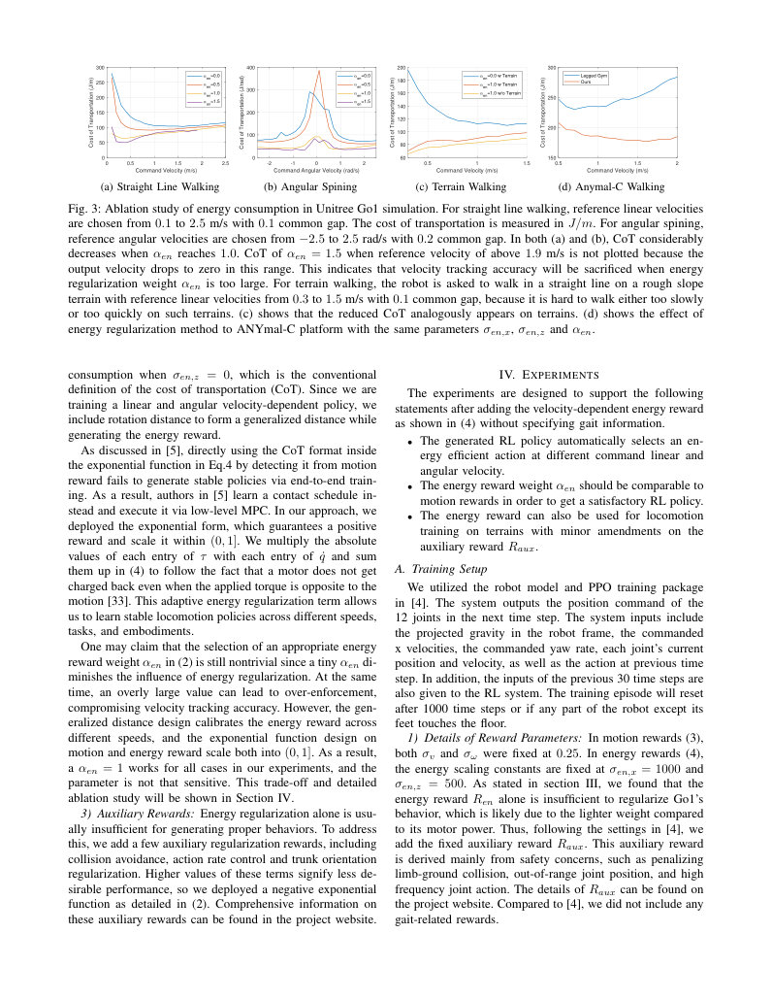
第 5 页Page 5PDF p.5
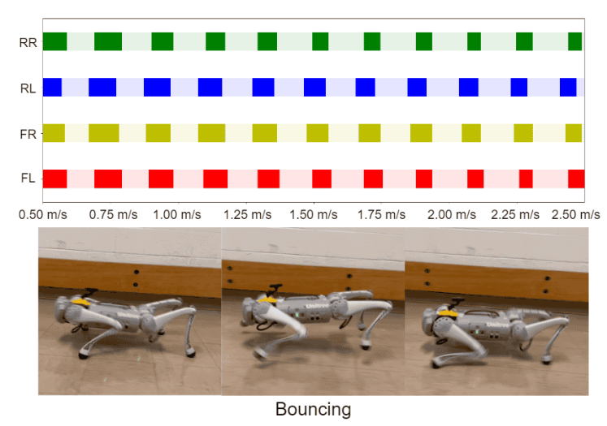
Fig. 4: Gait under different command velocities when \(\alpha_{en}=0.0\). The policy shows bouncing gait across all command velocities, which is not an energy-efficient choice of gait. We also demonstrate snapshots of bouncing gait, which is the four legs touches and leaves the ground almost simultaneously.
图 4：\(\alpha_{en}=0.0\) 时不同指令速度下的步态。该策略在所有指令速度下均表现出弹跳步态（bouncing gait），这并非一种高能效的步态选择。我们还展示了弹跳步态的快照，即四条腿几乎同时触地和离地。
2) Curriculum and Domain Randomization: We deployed curriculum technique on command velocities. The sampling range of linear and angular velocities start at \([-1, 1]\) m/s and \([-1, 1]\) rad/s. The sampling range increases when the total reward achieves a certain threshold, and the maximal sampling range is set at \([-5, 5]\) m/s and \([-5, 5]\) rad/s. The ground coefficient of friction is randomized between \([0.05, 1.5]\). We also added a disturbance to the robot mass with a uniform random value in \([-0.1, 3.0]\) kg. A uniformly distributed noise was added to the observation. All these randomized domain parameters are renewed every time the training episode resets, except observation noise is resampled after every time step.
2) 课程学习与域随机化：我们对指令速度采用了课程学习技术。线速度和角速度的采样范围初始为 \([-1, 1]\) m/s 和 \([-1, 1]\) rad/s。当总奖励达到一定阈值时采样范围增加，最大采样范围设置为 \([-5, 5]\) m/s 和 \([-5, 5]\) rad/s。地面摩擦系数在 \([0.05, 1.5]\) 之间随机化。我们还在机器人质量上添加了在 \([-0.1, 3.0]\) kg 范围内的均匀随机扰动。观测中添加了均匀分布的噪声。所有这些随机化的域参数在每次训练回合重置时更新，只有观测噪声在每个时间步后重新采样。
3) Amendments for Training on Terrains: All previous techniques are deployed on flat ground trainings. We also tested adding energy regularization while training on terrains. The training terrain shape is rough slope adapted from [6].
3) 地形训练的修正：先前所有的技术均应用于平地训练。我们还测试了在地形上训练时添加能量正则化。训练地形形态为改编自 [6] 的粗糙斜坡。
B. Translation and Rotation
B. 平移与旋转
To demonstrate natural emergence of efficient locomotion gaits, we evaluate the trained walking policy under different reference velocities. Fig. 2 demonstrates a trial run where the legged robot was commanded to move from \(\hat{v}_x=0.0\), to \(2.5\) m/s. The robot accelerates at \(0.5m/s^2\). We plot the gait recorded from the Go1 real-world deployment. We can see that our trained policy exhibits four-beat walking at low speed (around \(0.0\) to \(0.4\) m/s), where four legs touches the ground in front-left, front-right, rear-left, rear-right sequence. Then, the robot shows two-beat walking (around \(0.4\) to \(1.1\) m/s) where the four legs touch the ground in diagonal pairs and present observable moments where four legs touches the ground at the same time. At medium speed (around \(1.1\) to \(1.7\) m/s), the policy exhibits an trotting gait. At this gait, the four legs still touch the ground in diagonal pairs, but there
为了展示高效运动步态的自然涌现，我们在不同参考速度下评估了训练得到的行走策略。图 2 展示了一次试运行，其中腿式机器人接收从 \(\hat{v}_x=0.0\) 到 \(2.5\) m/s 的运动指令。机器人以 \(0.5m/s^2\) 的加速度加速。我们绘制了从 Go1 真实世界部署中记录的步态。可以看出，我们训练的策略在低速（约 \(0.0\) 至 \(0.4\) m/s）下表现出四拍步行（four-beat walking），四条腿按照左前、右前、左后、右后的顺序触地。随后，机器人表现出二拍步行（约 \(0.4\) 至 \(1.1\) m/s），四条腿对角成对触地，并呈现出可观察到的四腿同时触地的时刻。在中速（约 \(1.1\) 至 \(1.7\) m/s）下，策略表现为小跑步态（trotting gait）。在这种步态下，四条腿仍然对角成对触地，但
Energy Regularization Policy
能量正则化策略
RR RL FR FL
RR RL FR FL
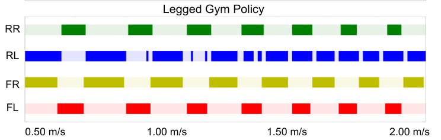
Fig. 5: Gait comparison of ANYmal-C between energy regularization and original legged gym policy [6]. Similar gait transition from walking to trotting also appears when energy regularization is applied. In the original legged gym policy, the lifting height of rear right leg is very low, so it has several unexpected mild contacts with the ground. Videos of ANYmal-C simulation can be found on our project website.
图 5：ANYmal-C 在能量正则化与原始 legged gym 策略 [6] 之间的步态对比。应用能量正则化后，同样出现了从步行到小跑的类似步态转换。在原始 legged gym 策略中，右后腿的抬升高度非常低，因此与地面发生了数次意外的轻微接触。ANYmal-C 仿真的视频可在我们的项目网站上找到。
is neither noticeable moment where the four legs touch the ground at the same time, nor moment where all four legs are in the air. At high speed (around \(1.7\) m/s and beyond), the trained policy exhibits a fly-trotting gait, which is similar to trotting gait, except there are observable moments where all four legs are in the air. This gait transition is endorsed by previous works [2], [5] that walking and trotting are respectively the most energy-efficient gaits under low and high speeds.
既没有明显的四腿同时触地时刻，也没有四腿均腾空的时刻。在高速（约 \(1.7\) m/s 及以上）下，训练的策略表现出飞跑小跑步态（fly-trotting gait），这与小跑步态类似，不同之处在于存在可观察到的四腿腾空时刻。这种步态转换得到了先前工作 [2]、[5] 的支持，即步行和小跑分别是低速和高速下最高能效的步态。
The result in Fig. 2 is generated with \(\alpha_{en}=1.0\). In Fig. 3a and Fig. 3b, we compare CoT and linear velocity tracking results across different \(\alpha_{en}\). When weight is small (like \(0.0\) or \(0.5\)), the effect of energy regularization is minor, so the generated policy has a much higher CoT. Fig. 4 shows that when \(\alpha_{en}=0.0\), the robot exhibits a bouncing gait across the whole velocity domain, which is not efficient [2].
图 2 中的结果是在 \(\alpha_{en}=1.0\) 下生成的。在图 3a 和图 3b 中，我们比较了不同 \(\alpha_{en}\) 下的 CoT 和线速度跟踪结果。当权重较小（如 \(0.0\) 或 \(0.5\)）时，能量正则化的效果微乎其微，因此生成的策略具有高得多的 CoT。图 4 显示，当 \(\alpha_{en}=0.0\) 时，机器人在整个速度范围内均表现出弹跳步态，这是低效的 [2]。
The proposed energy regularization can be similarly applied to other quadruped platforms. Experiments were conducted on the ANYmal-C simulation environment [6] with the same scaling constants \(\sigma_{en,x}=1000\) and \(\sigma_{en,z}=500\) as well as the regularization weight \(\alpha_{en}=1.0\). The generated policy similarly showed preferred gait transition from walking to trotting, which is show in Fig. 5. As shown in Fig. 3d, it also successfully reduced CoT in comparison to the original legged gym settings [6].
所提出的能量正则化可以类似地应用于其他四足平台。在 ANYmal-C 仿真环境 [6] 中进行了实验，采用了相同的缩放常数 \(\sigma_{en,x}=1000\) 和 \(\sigma_{en,z}=500\) 以及正则化权重 \(\alpha_{en}=1.0\)。生成的策略同样展示了期望的从步行到小跑的步态转换，如图 5 所示。如图 3d 所示，与原始 legged gym 设置 [6] 相比，它还成功降低了 CoT。
C. Circle Tracking
C. 圆周跟踪
We also tested the circle-tracking capacity of the policy. We ask the robot to walk with linear velocity \(1.0\) m/s and angular velocity \(0.5\) rad/s. This is equivalent to asking the robot to follow a circle with radius \(2\) m. We moved the robot in a semicircle with predefined center in simulation and recorded its position at each time step. Assume the distance between the robot and the circle center is \(d(t)\) at time step \(t\),
我们还测试了该策略的圆周跟踪能力。我们让机器人以 \(1.0\) m/s 的线速度和 \(0.5\) rad/s 的角速度行走。这相当于要求机器人沿着半径为 \(2\) m 的圆周运动。我们在仿真中让机器人沿着具有预定义圆心的半圆移动，并记录其在每个时间步的位置。假设在时间步 \(t\)，机器人与圆心之间的距离为 \(d(t)\)，
展开第 5 页原版整页（含全部图表、公式与页眉页脚）
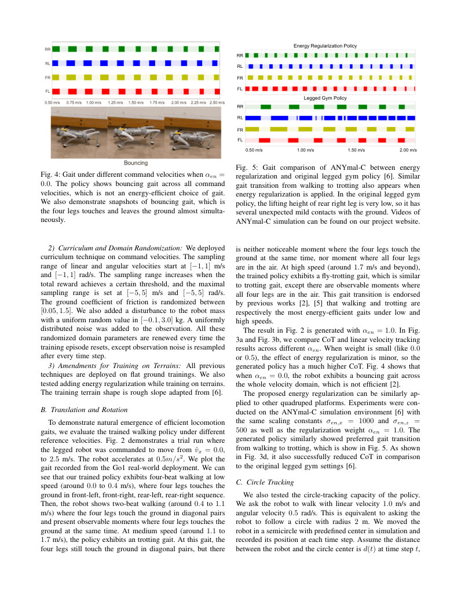
第 6 页Page 6PDF p.6
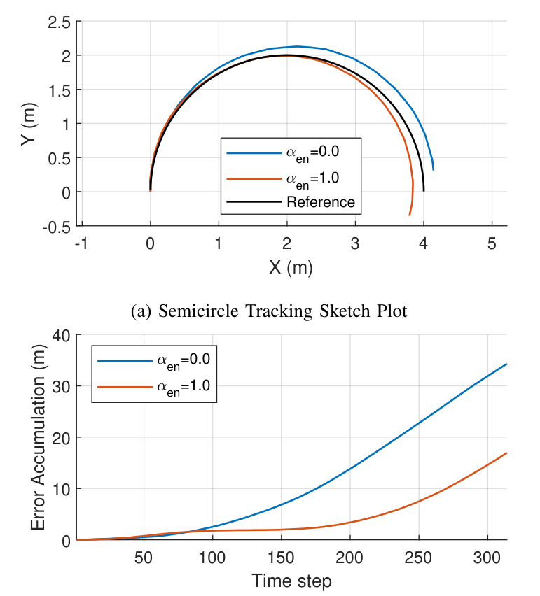
(b) Semicircle Tracking Error Accumulation
(b) 半圆跟踪误差累积
Fig. 6: Open-loop semicircle tracking comparison between \(\alpha_{en}=0.0\) and \(\alpha_{en}=1.0\). Since energy regularization reduces random motions irrelevant to target motions, the tracking error for \(\alpha_{en}=1.0\) accumulates considerably slower than \(\alpha_{en}=0.0\).
图 6：\(\alpha_{en}=0.0\) 与 \(\alpha_{en}=1.0\) 之间的开环半圆跟踪对比。由于能量正则化减少了与目标运动无关的随机运动，\(\alpha_{en}=1.0\) 的跟踪误差累积明显慢于 \(\alpha_{en}=0.0\)。
the error \(e(t)\) is defined as the absolute value of the difference between \(d\) and the \(2\) m pre-defined radius, \(|d(t)-2|\). We compare the accumulated error \(\sum_{i=1}^Te(t)\) between \(\alpha_{en}=0.0\) and \(1.0\) policies.
误差 \(e(t)\) 定义为 \(d\) 与 \(2\) m 预定义半径之差的绝对值，\(|d(t)-2|\)。我们比较了 \(\alpha_{en}=0.0\) 和 \(1.0\) 策略之间的累积误差 \(\sum_{i=1}^Te(t)\)。
The results are demonstrated in Fig. 6. The trajectory radius of \(\alpha_{en}=1.0\) policy is closer to the \(2\) m target and the error also accumulates much slower. This is because that energy regularization can effectively reduce motions that are not directly related to the target \(1.0\) m/s, \(0.5\) rad/s motion.
结果如图 6 所示。\(\alpha_{en}=1.0\) 策略的轨迹半径更接近 \(2\) m 目标，且误差累积也要慢得多。这是因为能量正则化能够有效减少与目标 \(1.0\) m/s、\(0.5\) rad/s 运动没有直接关联的动作。
D. Terrain Clearance
D. 越障表现
The effect of energy regularization on quadruped gait can also be deployed on terrain clearance. Since it is hard to walk either very fast or very slow on a rough slope, the training velocity range is limited to only \([-1.5, 1.5]\) m/s. When no energy regularization presents, the quadruped robot also tends to show a bouncing gait. When \(\alpha_{en}=1.0\), a more natural trotting gait appears. As indicated in Fig. 3, the policy generated from \(\alpha_{en}=1.0\) is also a more energy efficient gait.
能量正则化对四足步态的影响也可以应用于越障。由于在粗糙斜坡上很难走得极快或极慢，训练速度范围仅限制在 \([-1.5, 1.5]\) m/s。当不存在能量正则化时，四足机器人也往往表现出弹跳步态。当 \(\alpha_{en}=1.0\) 时，会出现更自然的小跑步态。如图 3 所示，由 \(\alpha_{en}=1.0\) 生成的策略也是一种更高能效的步态。
We tested the trained policy on the real Go1 quadruped robot. Fig. 7 shows experiment snapshots. The robot successfully cleared a 20 cm step covered by paper boards, which is a considerable high step compared to the size of Go1.
我们在真实 Go1 四足机器人上测试了训练好的策略。图 7 展示了实验快照。机器人成功跨越了一个覆盖有硬纸板的 20 cm 台阶，相对于 Go1 的尺寸而言，这是一个相当高的台阶。
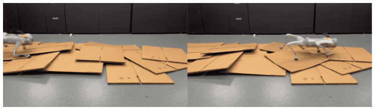
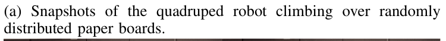
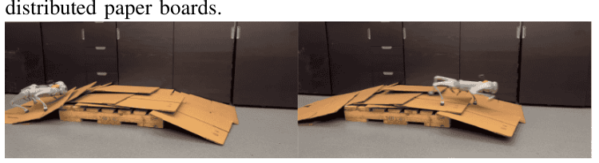
(b) Snapshots of the quadruped robot climbing over a 20 cm step covered by paper boards.
(b) 四足机器人攀爬越过覆盖有硬纸板的 20 cm 台阶的快照。
Fig. 7: Quadruped robot clearing terrains.
图 7：四足机器人跨越地形。
V. DISCUSSION AND CONCLUSION
V. 讨论与结论
This paper presented a novel approach to energy-efficient locomotion in quadruped robots by implementing a simplified, energy-centric reward strategy within a reinforcement learning framework. Our method demonstrated that quadruped robots, specifically Unitree Go1, could autonomously develop and transition between various gaits across different linear and angular velocites without relying on predefined gait patterns or intricate reward designs. The adaptive energy reward function, adjusted based on velocity, enabled these robots to select the most energy-efficient locomotion strategies naturally.
本文提出了一种通过在强化学习框架内实施简化的以能量为中心的奖励策略，来实现四足机器人高能效运动的新方法。我们的方法表明，四足机器人（特别是 Unitree Go1）可以在不同的线速度和角速度下自主形成并在不同步态之间进行转换，而无需依赖预定义的步态模式或复杂的奖励设计。基于速度调节的自适应能量奖励函数使这些机器人能够自然地选择最高能效的运动策略。
There are more extended locomotion tasks that we can make use of the energy-centric training, where the motion reward is no longer velocity tracking but includes more task-specific rewards. This would require the system to dynamically adjust its strategy in response to different task rewards. While this study concentrated on locomotion tasks, the underlying principle of leveraging energy efficiency to drive behavior selection holds broader potential. Future work could explore applying this energy-centric approach across different robotic tasks. For instance, manipulation and interaction tasks could also benefit from strategies prioritizing energy efficiency, potentially finding natural, efficient behaviors analogous to those observed in biological systems [34], [35]. Such a framework would align robotic systems more closely with sustainability principles and environmental consciousness.
还有更多扩展的运动任务可以利用这种以能量为中心的训练，在这些任务中，运动奖励不再是速度跟踪，而是包含更多特定于任务的奖励。这将要求系统根据不同的任务奖励动态调整其策略。尽管本研究集中于运动任务，但利用能量效率来驱动行为选择的基本原理具有更广阔的潜力。未来的工作可以探索将这种以能量为中心的方法应用于不同的机器人任务。例如，操作和交互任务也可以受益于优先考虑能量效率的策略，从而有可能发现类似于在生物系统中观察到的自然、高效行为 [34]、[35]。这样的框架将使机器人系统更紧密地契合可持续性原则和环保意识。
ACKNOWLEDGEMENTS
致谢
This project was supported by the Agency of Science, Technology and Research of Singapore via the National Science Scholarship, the FANUC Advanced Research Laboratory, and the InnoHK of the Government of the Hong Kong Special Administrative Region via the Hong Kong Centre for Logistics Robotics.
本项目得到了新加坡科技研究局（A*STAR）国家科学奖学金、发那科先进研究实验室（FANUC Advanced Research Laboratory）以及香港特别行政区政府 InnoHK 通过香港物流机械人研究中心的支持。
展开第 6 页原版整页（含全部图表、公式与页眉页脚）
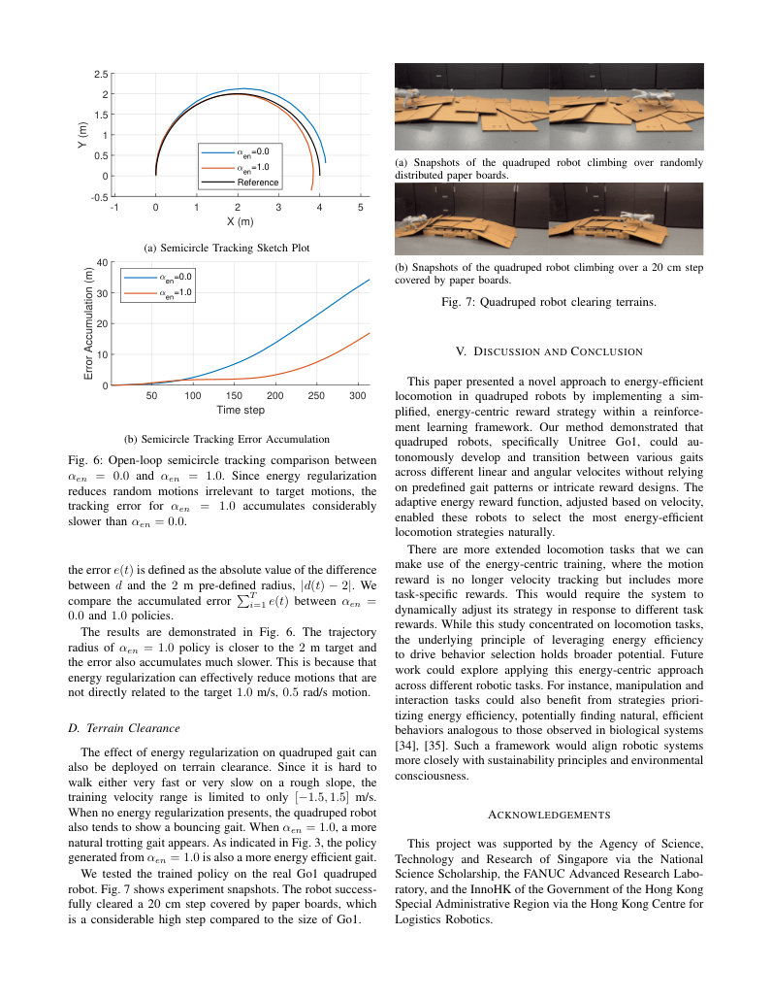
第 7 页Page 7PDF p.7
- [1] G. Cappellini, Y. P. Ivanenko, R. E. Poppele, and F. Lacquaniti, “Motor patterns in human walking and running,” Journal of neurophysiology , vol. 95, no. 6, pp. 3426–3437, 2006.
- [1] G. Cappellini, Y. P. Ivanenko, R. E. Poppele, and F. Lacquaniti, “Motor patterns in human walking and running,” Journal of neurophysiology , vol. 95, no. 6, pp. 3426–3437, 2006.
- [2] W. Xi, Y. Yesilevskiy, and C. D. Remy, “Selecting gaits for economical locomotion of legged robots,” The International Journal of Robotics Research , vol. 35, no. 9, pp. 1140–1154, 2016.
- [2] W. Xi, Y. Yesilevskiy, and C. D. Remy, “Selecting gaits for economical locomotion of legged robots,” The International Journal of Robotics Research , vol. 35, no. 9, pp. 1140–1154, 2016.
- [3] J. Siekmann, Y. Godse, A. Fern, and J. Hurst, “Sim-to-real learning of all common bipedal gaits via periodic reward composition,” in IEEE International Conference on Robotics and Automation , 2021.
- [3] J. Siekmann, Y. Godse, A. Fern, and J. Hurst，“通过周期性奖励组合实现所有常见双足步态的从仿真到真实学习”，收录于 IEEE 国际机器人与自动化会议 (IEEE International Conference on Robotics and Automation)，2021。
- [4] G. B. Margolis and A. Pulkit, “Walk these ways: Tuning robot control for generalization with multiplicity of behavior,” in Conference on Robot Learning , 2023.
- [4] G. B. Margolis and A. Pulkit，“以这些方式行走：通过多重行为调优机器人控制以实现泛化”，收录于机器人学习会议 (Conference on Robot Learning)，2023。
- [5] Y. Yang, T. Zhang, E. Coumans, J. Tan, and B. Boots, “Fast and efficient locomotion via learned gait transitions,” in Conference on Robot Learning , 2021.
- [5] Y. Yang, T. Zhang, E. Coumans, J. Tan, and B. Boots，“通过学习步态转换实现快速高效的运动”，收录于机器人学习会议 (Conference on Robot Learning)，2021。
- [6] N. Rudin, D. Hoeller, P. Reist, and M. Hutter, “Learning to walk in minutes using massively parallel deep reinforcement learning,” in Conference on Robot Learning , 2021.
- [6] N. Rudin, D. Hoeller, P. Reist, and M. Hutter，“利用大规模并行深度强化学习在数分钟内学会行走”，收录于机器人学习会议 (Conference on Robot Learning)，2021。
- [7] G. Feng, H. Zhang, Z. Li, X. B. Peng, B. Basireddy, L. Yue, Z. Song, L. Yang, Y. Liu, K. Sreenath, et al. , “Genloco: Generalized locomotion controllers for quadrupedal robots,” in Conference on Robot Learning , 2023.
- [7] G. Feng, H. Zhang, Z. Li, X. B. Peng, B. Basireddy, L. Yue, Z. Song, L. Yang, Y. Liu, K. Sreenath, et al.，“Genloco：面向四足机器人的通用运动控制器”，收录于机器人学习会议 (Conference on Robot Learning)，2023。
- [8] J. Liang, V. Makoviychuk, A. Handa, N. Chentanez, M. Macklin, and D. Fox, “Gpu-accelerated robotic simulation for distributed reinforcement learning,” in Conference on Robot Learning , 2018.
- [8] J. Liang, V. Makoviychuk, A. Handa, N. Chentanez, M. Macklin, and D. Fox，“面向分布式强化学习的 GPU 加速机器人仿真”，收录于机器人学习会议 (Conference on Robot Learning)，2018。
- [9] V. Makoviychuk, L. Wawrzyniak, Y. Guo, M. Lu, K. Storey, M. Macklin, D. Hoeller, N. Rudin, A. Allshire, A. Handa, and G. State, “Isaac gym: High performance GPU based physics simulation for robot learning,” in Conference on Neural Information Processing Systems , 2021.
- [9] V. Makoviychuk, L. Wawrzyniak, Y. Guo, M. Lu, K. Storey, M. Macklin, D. Hoeller, N. Rudin, A. Allshire, A. Handa, and G. State，“Isaac Gym：面向机器人学习的高性能 GPU 物理仿真”，收录于神经信息处理系统大会 (Conference on Neural Information Processing Systems)，2021。
- [10] S. Mahankali, C.-C. Lee, G. B. Margolis, Z.-W. Hong, and P. Agrawal, “Maximizing quadruped velocity by minimizing energy,” in IEEE International Conference on Robotics and Automation , 2024.
- [10] S. Mahankali, C.-C. Lee, G. B. Margolis, Z.-W. Hong, and P. Agrawal，“通过最小化能量最大化四足机器人速度”，收录于 IEEE 国际机器人与自动化会议 (IEEE International Conference on Robotics and Automation)，2024。
- [11] Z. Fu, A. Kumar, J. Malik, and D. Pathak, “Minimizing energy consumption leads to the emergence of gaits in legged robots,” in Conference on Robot Learning , 2021. - [12] “Unitree robotics, go1,” https://www.unitree.com/products/go1, online; accessed Jun. 2022.
- [11] Z. Fu, A. Kumar, J. Malik, and D. Pathak，“最小化能耗促成腿式机器人步态的涌现”，收录于机器人学习会议 (Conference on Robot Learning)，2021。 - [12] “宇树科技，Go1，” https://www.unitree.com/products/go1，在线；访问于 2022 年 6 月。
- [13] J. Hwangbo, J. Lee, A. Dosovitskiy, D. Bellicoso, V. Tsounis, V. Koltun, and M. Hutter, “Learning agile and dynamic motor skills for legged robots,” Science Robotics , vol. 4, no. 26, p. eaau5872, 2019. - [14] G. Ji, J. Mun, H. Kim, and J. Hwangbo, “Concurrent training of a control policy and a state estimator for dynamic and robust legged locomotion,” IEEE Robotics and Automation Letters , vol. 7, no. 2, pp. 4630–4637, 2022.
- [13] J. Hwangbo, J. Lee, A. Dosovitskiy, D. Bellicoso, V. Tsounis, V. Koltun, and M. Hutter，“学习腿式机器人的敏捷与动态运动技能”，《科学·机器人学》(Science Robotics)，第 4 卷，第 26 期，p. eaau5872，2019。 - [14] G. Ji, J. Mun, H. Kim, and J. Hwangbo，“用于动态且鲁棒腿式运动的控制策略与状态估计器并发训练”，《IEEE 机器人与自动化快报》(IEEE Robotics and Automation Letters)，第 7 卷，第 2 期，pp. 4630–4637，2022。
- [15] Z. Li, X. Cheng, X. B. Peng, P. Abbeel, S. Levine, G. Berseth, and K. Sreenath, “Reinforcement learning for robust parameterized locomotion control of bipedal robots,” in IEEE International Conference on Robotics and Automation , 2021.
- [15] Z. Li, X. Cheng, X. B. Peng, P. Abbeel, S. Levine, G. Berseth, and K. Sreenath，“用于双足机器人鲁棒参数化运动控制的强化学习”，收录于 IEEE 国际机器人与自动化会议 (IEEE International Conference on Robotics and Automation)，2021。
- [16] S. Chen, B. Zhang, M. W. Mueller, A. Rai, and K. Sreenath, “Learning torque control for quadrupedal locomotion,” in IEEE-RAS International Conference on Humanoid Robots , 2023.
- [16] S. Chen, B. Zhang, M. W. Mueller, A. Rai, and K. Sreenath，“面向四足机器人运动的力矩控制学习”，收录于 IEEE-RAS 类人机器人国际会议 (IEEE-RAS International Conference on Humanoid Robots)，2023。
- [17] T. Miki, J. Lee, J. Hwangbo, L. Wellhausen, V. Koltun, and M. Hutter, “Learning robust perceptive locomotion for quadrupedal robots in the wild,” Science Robotics , vol. 7, no. 62, p. eabk2822, 2022.
- [17] T. Miki, J. Lee, J. Hwangbo, L. Wellhausen, V. Koltun, and M. Hutter，“复杂野外环境下四足机器人的鲁棒感知运动学习”，《科学·机器人学》(Science Robotics)，第 7 卷，第 62 期，p. eabk2822，2022。
- [18] J. Lee, J. Hwangbo, L. Wellhausen, V. Koltun, and M. Hutter, “Learning quadrupedal locomotion over challenging terrain,” Science Robotics , vol. 5, no. 47, p. eabc5986, 2020.
- [18] J. Lee, J. Hwangbo, L. Wellhausen, V. Koltun, and M. Hutter，“复杂挑战地形上的四足机器人运动学习”，《科学·机器人学》(Science Robotics)，第 5 卷，第 47 期，p. eabc5986，2020。
- [19] S. Choi, G. Ji, J. Park, H. Kim, J. Mun, J. H. Lee, and J. Hwangbo, “Learning quadrupedal locomotion on deformable terrain,” Science Robotics , vol. 8, no. 74, p. eade2256, 2023.
- [19] S. Choi, G. Ji, J. Park, H. Kim, J. Mun, J. H. Lee, and J. Hwangbo，“可形变地形上的四足机器人运动学习”，《科学·机器人学》(Science Robotics)，第 8 卷，第 74 期，p. eade2256，2023。
- [20] G. B. Margolis, G. Yang, K. Paigwar, T. Chen, and P. Agrawal, “Rapid locomotion via reinforcement learning,” The International Journal of Robotics Research , vol. 43, no. 4, pp. 572–587, 2024.
- [20] G. B. Margolis, G. Yang, K. Paigwar, T. Chen, and P. Agrawal，“基于强化学习的快速运动”，《国际机器人研究杂志》(The International Journal of Robotics Research)，第 43 卷，第 4 期，pp. 572–587，2024。
- [21] M. H. Raibert, “Trotting, pacing and bounding by a quadruped robot,” Journal of Biomechanics , vol. 23, pp. 79–98, 1990.
- [21] M. H. Raibert，“四足机器人的小跑、对侧步与奔跳”，《生物力学杂志》(Journal of Biomechanics)，第 23 卷，pp. 79–98，1990。
- [22] X. Da, Z. Xie, D. Hoeller, B. Boots, A. Anandkumar, Y. Zhu, B. Babich, and A. Garg, “Learning a contact-adaptive controller for robust, efficient legged locomotion,” in Conference on Robot Learning , 2020.
- [22] X. Da, Z. Xie, D. Hoeller, B. Boots, A. Anandkumar, Y. Zhu, B. Babich, and A. Garg，“学习接触自适应控制器以实现鲁棒高效的腿式运动”，收录于机器人学习会议 (Conference on Robot Learning)，2020。
- [23] H. Duan, A. Malik, J. Dao, A. Saxena, K. Green, J. Siekmann, A. Fern, and J. Hurst, “Sim-to-real learning of footstep-constrained bipedal dynamic walking,” in IEEE International Conference on Robotics and Automation , 2022.
- [23] H. Duan, A. Malik, J. Dao, A. Saxena, K. Green, J. Siekmann, A. Fern, and J. Hurst，“落足点约束下双足动态行走的从仿真到真实学习”，收录于 IEEE 国际机器人与自动化会议 (IEEE International Conference on Robotics and Automation)，2022。
- [24] S. Le Cleac’h, T. A. Howell, S. Yang, C.-Y. Lee, J. Zhang, A. Bishop, M. Schwager, and Z. Manchester, “Fast contact-implicit model predictive control,” IEEE Transactions on Robotics , vol. 40, pp. 1617–1629, 2024.
- [24] S. Le Cleac’h, T. A. Howell, S. Yang, C.-Y. Lee, J. Zhang, A. Bishop, M. Schwager, and Z. Manchester，“快速接触隐式模型预测控制”，《IEEE 机器人学汇刊》(IEEE Transactions on Robotics)，第 40 卷，pp. 1617–1629，2024。
- [25] G. Gabrielli, “What price speed? specific power required for propulsion of vehicles,” Mechanical Engineering-CIME , vol. 133, no. 10, pp. 4–5, 2011.
- [25] G. Gabrielli，“速度的代价是什么？运载工具推进所需的比功率”，《机械工程-CIME》(Mechanical Engineering-CIME)，第 133 卷，第 10 期，pp. 4–5，2011。
- [26] V. Tucker, “The energetic cost of moving about: Walking and running are extremely inefficient forms of locomotion. much greater efficiency is achieved by birds, fish, and bicyclists.” American Scientist , vol. 63, no. 4, pp. 413–419, 1975.
- [26] V. Tucker，“移动的能量代价：步行和跑步是极其低效的运动形式，鸟类、鱼类和骑自行车者具有高得多的效率”，《美国科学家》(American Scientist)，第 63 卷，第 4 期，pp. 413–419，1975。
- [27] H. Ralston, “Energy-speed relation and optimal speed during level walking.” Internationale Zeitschrift für angewandte Physiologie einschließlich Arbeitsphysiologie , vol. 17, no. 4, pp. 277–283, 1958.
- [27] H. Ralston，“平地行走期间的能量-速度关系与最优速度”，《国际应用生理学与工作生理学杂志》(Internationale Zeitschrift für angewandte Physiologie einschließlich Arbeitsphysiologie)，第 17 卷，第 4 期，pp. 277–283，1958。
- [28] B. Umberger and P. Martin, “Mechanical power and efficiency of level walking with different stride rates.” Journal of Experimental Biology , vol. 210, no. 18, pp. 3255–3265, 2007.
- [28] B. Umberger and P. Martin，“不同步频平地行走的机械功率与效率”，《实验生物学杂志》(Journal of Experimental Biology)，第 210 卷，第 18 期，pp. 3255–3265，2007。
- [29] C. Chevallereau and Y. Aoustin, “Optimal reference trajectories for walking and running of a biped robot.” Robotica , vol. 19, no. 5, pp. 557–569, 2001.
- [29] C. Chevallereau and Y. Aoustin，“双足机器人行走与奔跑的最优参考轨迹”，《机器人学》(Robotica)，第 19 卷，第 5 期，pp. 557–569，2001。
- [30] C. D. Remy, “Optimal exploitation of natural dynamics in legged locomotion.” Ph.D. dissertation, Eidgenossische Technische Hochschule., 2011.
- [30] C. D. Remy，“腿式运动中自然动力学的最优利用”，博士学位论文，苏黎世联邦理工学院 (Eidgenössische Technische Hochschule)，2011。
- [31] K. Kiguchi, Y. Kusumoto, K. Watanabe, I. K, and F. T, “Energyoptimal gait analysis of quadruped robots.” Artificial Life and Robotics. , vol. 6, no. 3, pp. 120–125, 2002.
- [31] K. Kiguchi, Y. Kusumoto, K. Watanabe, I. K, and F. T，“四足机器人的能量最优步态分析”，《人工生命与机器人》(Artificial Life and Robotics)，第 6 卷，第 3 期，pp. 120–125，2002。
- [32] A. Muraro, C. Chevallereau, and Y. Aoustin, “Optimal trajectories for a quadruped robot with trot, amble and curvet gaits for two energetic criteria.” Multibody System Dynamics , vol. 9, no. 1, pp. 39–62, 2003.
- [32] A. Muraro, C. Chevallereau, and Y. Aoustin，“基于两种能量准则的四足机器人小跑、缓步和跃步步态最优轨迹”，《多体系统动力学》(Multibody System Dynamics)，第 9 卷，第 1 期，pp. 39–62，2003。
- [33] Z. Zhuang, Z. Fu, J. Wang, C. Atkeson, S. Schwertfeger, C. Finn, and D. Pathak, “Robot parkour learning,” in Conference on Robot Learning , 2023.
- [33] Z. Zhuang, Z. Fu, J. Wang, C. Atkeson, S. Schwertfeger, C. Finn, and D. Pathak，“机器人跑酷学习”，收录于机器人学习会议 (Conference on Robot Learning)，2023。
- [34] X. Cheng, A. Kumar, and D. Pathak, “Legs as manipulator: Pushing quadrupedal agility beyond locomotion,” in IEEE International Conference on Robotics and Automation , 2023.
- [34] X. Cheng, A. Kumar, and D. Pathak，“腿作为操作臂：突破运动极限的四足机器人敏捷性”，收录于 IEEE 国际机器人与自动化会议 (IEEE International Conference on Robotics and Automation)，2023。
- [35] E. Vollenweider, M. Bjelonic, V. Klemm, N. Rudin, J. Lee, and M. Hutter, “Advanced skills through multiple adversarial motion priors in reinforcement learning,” in IEEE International Conference on Robotics and Automation , 2023.
- [35] E. Vollenweider, M. Bjelonic, V. Klemm, N. Rudin, J. Lee, and M. Hutter，“强化学习中通过多对抗运动先验获取高级技能”，收录于 IEEE 国际机器人与自动化会议 (IEEE International Conference on Robotics and Automation)，2023。
展开第 7 页原版整页（含全部图表、公式与页眉页脚）
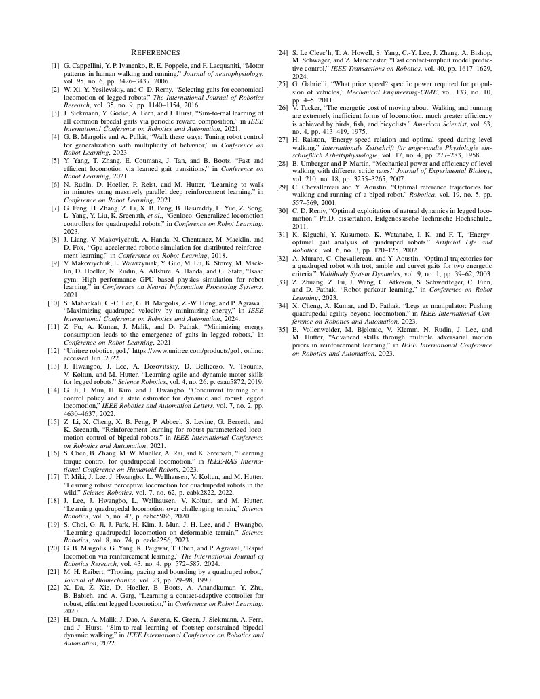
原文署名：Boyuan Liang, Lingfeng Sun, Xinghao Zhu, Bike Zhang, Ziyin Xiong, Yixiao Wang, Chenran Li, Koushil Sreenath, Masayoshi Tomizuka. Adaptive Energy Regularization for Autonomous Gait Transition and Energy-Efficient Quadruped Locomotion. 2403.20001v2. 原始出版物 · CC BY 4.0。本站新增中文机器译文与阅读排版。